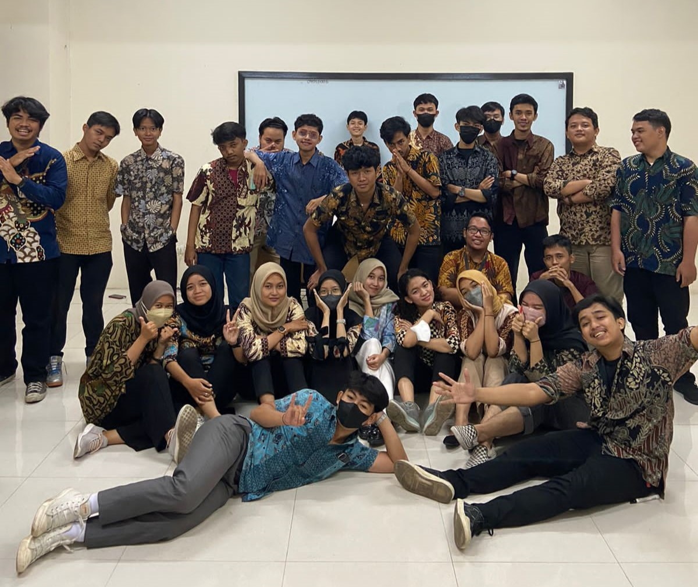

About Us
Hi sobat Edu!!
Kenalan yuk sama eduHub
Apa itu EduHub ?
EduHub merupakan web belajar coding gratis bagi siapa saja yang ingin belajar terkait segala bahasa
pemrograman
Gimana ya cerita awal dibuatnya ?
Siapa saja orang-orang di balik eduHub?
check it out!
Founder eduHub :
EduHub dibuat dan dibangun oleh Sir Fa'i bersama ketiga kawannya, yaitu Teguh Satrio, Ferdi Nur Rochim dan
Nazwa Lintang Seina.
Berikut adalah kisahnya...

Awal eduHub dibuat pada tahun 2023 oleh Sir Fa'i berserta ketiga kawan kuliahnya di program studi Teknik
Informatika,
suatu ketika saat mata kuliah pemrograman web, kami diberi tugas untuk membuat web dengan tema bebas.
Berbekal modul-modul, inspirasi dari luar, serta saran dari dosen terciptalah ide untuk membuat sebuah web
bertema pendidikan. Kami pun mulai menggarapnya dan memberi web tersebut nama EduHub.